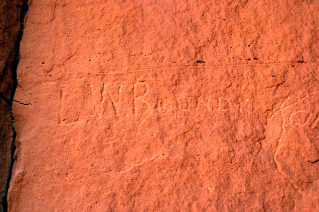

Chapter 9
It seems that when Lorenzo and his families are getting settled in and running a "routine" life, there is not much reported in the various news items or journal entries of others. That makes sense because normal, uneventful life rarely brings one to the attention of others. It was the same way in Centerville before the call came for Lorenzo to the Indian Mission in 1853 and again for him to take his families to the Kanab area in 1865. In each of those cases, there were several years just prior to those calls that little information is available concerning their lives and living. The past few years are the same here. Kanarra was established and life was moving smoothly, or so we suppose, because of the lack of news to the contrary.
In the beginning of 1873, Lorenzo was called upon to lead an expedition to go into Arizona to explore the area and find places suitable for settlement. As is the case with most of these kinds of expeditions, it took place in the winter. It is probable that Brigham Young called upon men to accomplish these tasks in the winter because it would not take them away from their farms during the important times of the year. Unfortunately, winter is a difficult time to explore uncivilized regions. Lorenzo was obedient and led a successful expedition.
Jacob Hamblin was also called to be a leader of this expedition. According to his biography, Jacob received a letter at about Christmas time, 1872, detailing his assignment. He told his family "We're to leave Toquerville January 22 … " Jacob with his mount and several pack animals arrived at Toquerville the day before the designated time to leave. That evening he learned that Lorenzo Roundy was to be the President of the company and himself to be in charge of Indian affairs." 1 Lorenzo received his letter, dated January 7, 1873, which was addressed to him and to Bishop John R. Murdock. 2 According to the Hamblin history, as the group met in Toquerville, Lorenzo explained the purpose of the expedition: "They were to go to the East of the San Francisco Mountains, in Arizona, until they intersected the head-waters of the Rio Verde, then travel down that river until they were satisfied as to the character of the country, the nature of the soil, prospects for irrigation, timber, stock range, etc. … They were to show a peaceable, considerate spirit to the Indians residing in the country to be explored; to kill no game except such as might be actually needed for food. … Also, they were all reminded to keep a journal of each day's doings." 3
Lorenzo sent a detailed letter to Brigham Young summarizing the results of the expedition (the entire letter is in the footnote). 4 Lorenzo does not specify any dates of his journey, but from the diary of John D. Lee we have a fairly good start and end date. The company arrived in Lonely Dell, which is where Lee's Ferry is located, on February 1, 1873. Lee says that the company consisted of 12 men, 15 horses and three baggage wagons. It took them two days to make the crossing. 5 Lee then records the company coming back on the 25th of February, saying "This morning Capt. Roundy & Men & 26 animals recrossed the Colerado River from a Tour of 25 days in region of the Sanfrancisco Mountains." 6
The expedition travelled from Kanab to Buckskin Mountain to House Rock and on to Jacob Pools and to Lee's Ferry. In his letter, Lorenzo describes the water conditions often as drinkable, but somewhat bitter. They seemed to be able to find vegetation as necessary for their animals. at times they waded through deep snow. From Lee's Ferry they continued on to Navajo Springs and Bitter Springs on to Moencopi (spelled many different ways throughout the writings). The went along the Little Colorado River and on to the San Francisco Mountains. They came out to near Prescott, Arizona and then turned to go back home. His report was not very encouraging.
An interesting commentary on this expedition is recorded twenty years later in the Juvenile Instructor. It shows the complete faith Lorenzo had in the church leaders, particularly Brigham Young. Parts of that article and included here:
"Prophecy Fulfilled" by "Guillermo"
"While in the company the other evening of one of the brethren, who was one of Bishop Roundy's party when they explored the Little Colorado country in the northern part of Arizona, in 1873, … he related two striking occurrences of the literal fulfillment of the promises made in the name of our Savior … by Brigham Young … .
"He said in substance: 'When we were set apart by Brigham Young for that mission he promised us, among other things, that if we would do as we were told we would not fail any night to have grass for our horses; and also that as we were going down into a game country, he would promise use, if we would not kill any more game that we needed for our own use, we would always have meat when we needed it.
In regard to the first-mentioned promise, one of the brethren who was in the party said that if President Young knew so much about the country we were going into as he did, he certainly would not make them any such promise, for he had been down into parts of it and found much country destitute of grass. On our way down we found grass every night as had been promised. … But one day there was more snow … about three feet deep … obliged to make one horse wallow through a short distance to break the track … . We kept on all day this way, and about sundown one of the brethren spoke up and said, 'Bishop Roundy, what about President Young's promise now?'
"He was assured that we certainly would find some yet, and we travelled on. Just before dark we crossed over a small ridge, and on the other side we found a spot about one hundred yards wide by three hundred yards long, without any snow, and covered with as pretty green grass as I ever saw. …"
" … on the way back … being stopped by the very deep snow, we were compelled to retrace our steps and go around by way of Kanab … made us about four days longer than we expected, our store of provisions ran short. … I said to my companion, 'Well, what about that meat? Isn't it about time we were getting it, we need it now?'
"… about half an hour afterwards I espied … a large, white mountain hare …
"In conclusion the brother said that Bishop Roundy was a man with as much faith in the gospel and the promises of the servants of God as any man he ever saw … ." 7
Other printed reports of this expedition appeared in various forms, including records of reports given in the Southern Utah Conference. 8
A few months later, there was a concern at the ferry. Some settlers, sent to Arizona by Brigham young, became discouraged by the dry conditions and a fear of the Indians. Some returned from the Arizona Mission area to the ferry and asked Lee what his advice was. He records, "I advised them to put their animals on the best feed & take care of them till an answer can be had from Prest. Young and another Boat built (the main ferry boat was destroyed in a freak wind accident a few days before); that I did not think the Mission was broke up. I expect Bro. Roundy & some others will be here soon. Be patient, for all will work togeather for good." 9 Lorenzo arrived on the 23rd bringing some animals and people to help the settlers. Lorenzo had received a telegram from President Young saying that "he would like to have him take a few Brethren & go over to AraZona & See whether the water had realy dried up, or whether it was the feeling of the Brethrn that had dreid up & report immediately." 10
Lorenzo continued to be very involved in general affairs in the region. The Deseret News reported in a list of "Presiding Elders and Bishops" of the LDS church "in Utah Territory and adjacent Settlements" and included L. W. Roundy as the presiding authority in Kane County, Kanarra. 11 Over the years, Kanarra gets reported as being in Kane, Iron and Washington counties. The boundaries changed a little over the years and Kanarra was near the borders of all three. Apparently, he was also somewhat involved with the industries and activities of Washington County. In a history of the cotton industry of the area, there is a reference in March 1873 to a letter sent to Lorenzo by Secretary A. R. Whitehead reporting on the condition of the cotton factory, stating "The Factory is doing well with one exception … we have no dyer, and it bothers us considerable." 12Apparently, they had a dyer to work in the factory, but he gave his notice and quit. It is unclear how Lorenzo was involved in this, but it shows the considerable influence he had in the affairs of the region.
It is possible that Lorenzo's interest in the cotton mills was a business interest though that is not established anywhere. From writings of his family, we know that he was involved in business. His daughter, Annie Isadore, write in her history several references to his work. "My father and William Ford owned a grist mill by the foot of the hill part of town. … The summer after my father died, I went with my mother and brother down to Dixie. It was up on the Virgin River. Father had an orchard there. We went to dry fruit. … Father owned shares in a co-op sheep herd, cattle herd and a store. He used to bring me candy, but candy was very scarce then as they had to have their freight from Salt Lake City by team. It would take them about three weeks to make the trip." 13
Also in the spring of that year, it was noted by John Johnson Davies that the United Order was established in Kanarra under the direction of Bishop Lorenzo Roundy. He stated that the order did not last very long. Davies says that the failure was not because it was not right. 14 The Deseret News has a report in 1874 stating that the United Order was established in Kanarra, among other places. 15 This report, though dated 1874, does not specify when the community first established the Order, so the reports may not be conflicting as to the date.
Later in the spring, it was again reported that the area conference was held in Saint George, and that Bishop Roundy delivered a "very interesting" discourse. 16
It appears that Lorenzo continued to be involved more and more in the Arizona explorations and settlement effort. There is an account in the newspaper later in the summer about Lorenzo going to Lee's Ferry and making a report. 17
An interesting artifact can be found attesting to Lorenzo's presence in Arizona. House Rock is in a valley about 30 miles west and south of Lee's Ferry and is on the trail that runs from the Utah settlements to the Colorado River at Lee's Ferry. There is a place where Lorenzo's name is carved in the rock. Within a few feet John D. Lee's name is also carved. (This photo is courtesy of Bob Ford.)

This was an interesting year for Lorenzo. One wonders what memories were brought to mind to him because it is in December on 1873 that he makes his official statement about the conspiracy affair against Joseph Smith many years before. Brigham Young, on his way to Saint George, was in Kanarra on Saturday, December 13th, 1873. The report states that "While in Kanarra on this day, Bishop Lorenzo W. Roundy made the following statement to President Brigham Young in the presence of Elders George A. Smith, A Milton Musser and Robert C. Lund, which was reported and filed in the Historian's Office" [See chapter 3, footnote 3.]
About a month after this, Lorenzo was in Salt Lake City as a member of the Territorial Legislature. There are several references in the Deseret News mentioning his work in the legislature. He was appointed to the "Roads, Bridges, Ferries and Canyons" committee and the "Indian Affairs" committee. 18 In his work, he represented the people in various bills and petitions, including the incorporation of Toquer 19 as a city as well as Washington City, 20 seeking appropriations for two roads 21 and money for "free schools throughout the Territory." 22 He also recommended a judge and two Notary Publics, 23 who were then elected. One of the roads proposed for funding, between Harrisburg and Bellevue, was finally approved. 24
A brief mention of Lorenzo is made in John D. Lee's diary for April, 7, 1874. William Berry, a son-in-law of Lee's lived in Kanarra and Lee visited the community at times. He reported a meeting there, saying that President Brigham Young and George A. Smith were "put up at Bp. Roundy's & I at Wm. Berrie's." Some meetings were held which were reported to contain valuable instruction. he also mentioned that the "Entore setlement (except 2) went into the new order with Bishop Roundy, Prest., & Wm. Berry, vice Prest." 25
Again in the fall of 1874, Brigham Young came south, stopping by Kanarra where they had dinner with the Roundy family. The report says that "At all meetings they begged the saints to be faithful and diligent in the discharge of their duties. They also preached the doctrine of Baptism for the dead, and urged the necessity of the brethren building the Temple and upon the benefits of the United Order, if carried out according to the designs of the Lord, the importance of day and Sabbath schools, etc." 26
Conditions are quiet again for a year or so. We know that Lorenzo organized the Relief Society in Kanarra on December 14, 1875, sustaining his wife, Susannah as the president.27 Other than that, there is not anything significantly reported concerning Lorenzo until the first part of January 1876 when he once again serves in the Utah Territorial legislature. He is again appointed to serve on the Roads, Bridges, Ferries and Canyons committee and the Indian Affairs committee. 28 He presents a much larger appropriations petition for the schools, this time representing 150 people, asking for $30,000 annually. 29 He also asks for some money for building and improving roads, including a road through the area from Kanab to Lee's Ferry. 30
Lorenzo sent a telegram to President Young in March. Apparently, President Young was planning to come south and go over the divide between the upper Sevier and the upper Kanab and Lorenzo advised against it because of the snow and mud. He also reported the state of the cooperative as far as the survival of the stock through a hard winter. 31
The next recorded information concerning Lorenzo mentions his assignment to go with some others to "visit our settlements in Arizona." This would be Lorenzo's last such assignment. 32
1 Corbett, "Jacob Hamblin, The Peacemaker" p 336.
2 Jesse Lenard Warner, "The Roundy Family" p 113.
3 Corbett, pp 336, 337; this has a reference to Bleak, james G., Annals of Southern Utah Mission. Historian's office, p 30
4 Brigham Young Letters, Box 34, folder 20 (reel 47), Mar. 7, 1873, transcribed here:
L. W. Roundy, March 7. / 73.
explorations in Arizona
Kanarrah March the 7 / 73
Prest. Young
Dear Sir
I will try and give you a description of the country as near as I can that I have been to explore. After leaving Kanab we traveld 172 miles to the Navajoe well, the watter is in a hole in rocks walld up, sufficient watter for bout 20 or 25 animals to once, 8 miles to the buck skin Mt, 15 miles a cross a very crooked road, plenty cedars and pine on the mt, go down into a little vally running south 1/4 mile wide 10 miles to the rock house spring, making 33 miles to watter, the spring seeps out of some stone edges of rocks 2 horses can drink it as fast as it runs out, good hard ground for a road to there, 11 miles from there to Jacobs Pools, considerable sand, no timber, sufficient watter for herding, 12 1/2 miles to
[page 2] Soap creek, small stream, five miles to bager Creek, 10 from there to mouth of Parriah, good feed except the last 5 miles, some part of the way, considerable broken crooked road. from the Pools you turn round a sandstone lege and go up the Colorado to the crossings, then turn right back on the other side of the river till a bout opposit of the pools under the same sandstone leg, one now about the ferry, where the ferry now is you have got to go over a point of a sandstone ledge of rocks bout 2 miles, then wind round to get off quite a long dugway making quite a job for a road, by moving the down bout 1 mile and 1/4, there is a good place for a ferry, and not more than third or fourth as much work to make a road, and will save bout 3 miles of bad road, but would not be quite as convenient to J D Lees house, from the ferry it is bout 6 miles to the Navajoe
[page 3] springs. A small spring 3/4 of a mile form the road, 10 miles to bitter springs, the watter is little bitter, some little work along to make a road from this point there is no trouble to go through except some little washes will wanto be put, from Bitter Springs 9 or 10 miles to holes in the rocks 1/4 mile up a canyon. form the rock house springs 4 miles below this there is not no timber nor brush large a nough for fewel, you keep under a sandstone ledge from buckskin Mt. to Mowing Coppy [Moencopi], on the right is lime stone, a vally 1/4 mile wide for a road, from the rocks holes to Moring Coppy bout 15 miles, 4 or 5 miles cedars and pine little broken, through the timber at the Mowing Coppy, there is a number springs coming out of a sandstone lege similar to St. George, of at the right it is very broken and barren here The rocks are all rotten decaying A way not much vegitation growing nor much
[page 4] grass we saw probably a bout 160 acres good farm land with watter no timber very near as I discover [? ink smeared] saw up 8 miles further twas [? ink smeared] and more of it. here we returned to the right a little 20 miles run the Mowing Coppy Bottom found a good pass bout 10 miles up the river. got out of the rocks came to bottoms with cottonwood timber fit for nothing but firewood considerable for alkaly it is mostly sand rock the country does not rise ferry fast begins to open out about 25 miles to the foothills of Sansonfrisco Peak next day went bout 25 miles, bottoms grow wider timber better pretty good vegitation in the bottoms except flats that comes in on each side when it rains the watter that comes in is so salty it kills the vegitation for a short distance the bottoms looks thirsty, the river is quicksand but runs dead
[page 5] Traveld up 35 miles came to Black falls from 20 to 30 feet, from 10 to 20 miles to the Peak, here Jacob came to us with one Oriba gide the Indian Department was a failure would not got any if I had not sent Br. Hatch not much timber at the falls bottoms quite extensive you could see now and then a bunch of volcanic rock sticking up in the bottoms sandstone leges running nearly out could not see no high mountains to the north and east except a high leg bout 60 miles at the Oriba village and up the river to the yomas 3 days travel up 13 miles came to falls 75 ft or more here the cottonwood timber was 1/2 mile or more wide bottoms on the same level with the timber the alkalye was pretty much run out there is grass
[page 6] all over the country but no brush or timber except on the river and mountain can see to the north and east 2 or 3 days travel some old decays sandstone leges all decayd a way along the bottoms vegitable soil 4 to 6 ft deep 6 or 7 miles above the falls came to more extensive bottoms timber wider and better country still opens out went up 8 or 10 miles further still ground washes here there is no trouble to take the watter out I thought we had gone far enough in that direction as it was deviating from the course that you marked out here our gide left us saw we could not cross the range of mountains saw if we could we would go right into the Apache country and they would kill us I offerd him a horse to go with us and talk for us but he would not he said they would not believe a word we would say he said we would have
[page 7] take the Beal road and go round by Prscot way round that way the country was so rough, here he said he could take us in one big days travel to a lake that we could not see across, I tryde my best to get him to go but he would not, he saw the Apachys sometime came up there and fished, he saw there was pine timber growing round it, in a few miles we came to the Beal road, could see with a glass timber up a long way, here we found railroad stakes as telegraph stakes, I should think some of them has been set last summer our gide said the country here was warm summer and winter, you can taste the watter little salty but taste better than the virgin, the river is not quite as large as the virgin. we took the road back through the forest, I think the key to the
[page 8] whole country is in this vicinity, after seeing the lay of the country if I had took my own course I would spent 5 or 6 days more in the river then off south east of the Peak over into Salt River and in that vicinity we then went round the mountain to the south traveld 4 days west and south went right out of a warm country into snow and a cold country, two days we had a heavy storm, the fac of the country changes, it is volcanic, volcanic rock all over the country plenty of timber bigest half Black pine, some scrub oak round the mountain for a few miles it is quite level no under brush some opening mile wide full of volcanic rock but no watter, we saw in none days 2 springs any tree that was blown over the roots was full of rock, south west from the Peak we came to two vallys and two ranges of mountains to cross over, no watter and the brokenest vallys I ever saw we could see no chance to get through them without coming back
[page 9] and taking the road round by Prescot had not provisions to take that trip so we turnd back the same for 8 days averaging from one foot to 2 1/2 it cut our horses down so that we took the straightest rout home when we got out of the forest we came into a warm country again wher Jacob could settle all the saints in this vacinity round them mountains. I faild to see I have described the country jest as nigh as I can with out making it out leaving you to put your own judgement on it.
I remain your co worker and well wisher in the Gospel
Bp L. W. Roundy
As we killd 2 turkeys saw good many more. but no deer one gang of antelope but could kill none.
5 The Diaries of John D. Lee, p 224.
7 Juvenile Instructor, April 1, 1893
"Saturday May 3, 10 a.m.
"… Bishop L. W. Roundy related some items connected with his exploring expedition beyond the Colorado river. After crossing the Colorado he traveled to Mo-in-koppy, about 50 miles. Seven miles beyond the Colorado is the Navajo Spring. From there it was nine or ten miles to Bitter Spring. From the latter point it was ten miles to some holes in the rocks, containing water, Feed was good in that region. Traveled down a valley a quarter of a mile wide, went through cedars about three miles form there being the first timber after leaving Buckskin mountains. Mo-in-koppy was a place a good deal like St. George Valley, many springs breaking out under the hills. Land limited, partly impregnated with salts. Where we first struck the little Colorado river, scattering cottonwood trees were found; bottoms a quarter of a mile wide, wider higher up, timber also better. Proceeded up the river, camped near some falls, bottoms two to three miles wide, with considerable timber. Beyond the San Francisco mountains. Went in sight of the Oriba village of the Moquis Indians. The Moquis family lived on the river, but had been obliged to take to the hills for protection on account of the Navajos and Apaches. Came across the Butterfield mail road and also to where the R. R. was staked off. Their guide told them that on the Little Colorado the climate was always mild, snow fell but little and thawed immediately. Described a snow storm, which they encountered in the Pines at the San Francisco Mountains. South of the San Francisco Mountains the country was very broken. Came across a very wild timbered country near the San Francisco Mountain, saw some turkeys, but failed to see the walnut and hickory timber supposed to be there, nor any water, not land fit for settlements. Thought that on the Little Colorado the climate was warm and favorable and the facilities for settling were very good. Cottonwood timber abundant, land rich, grass and water plenty. The Little Colorado was not quite the size of the Virgen River, water a little brackish, but better than that from the former river. The distance from the Little Colorado to good saw timber on the San Francisco Mountain was from fifteen to thirty miles. Thought that as a stock country the region near the Little Colorado was very excellent. Distance form ferry in Colorado to Little Colorado River, about 125 miles. Said the Moquis were anxious for our people to settle there, and said that many of their people were desirous of settling with our people. Referred to the principle of celestial marriage and bore testimony to its divinity. Exhorted to faithfulness and obedience.
"Benediction by Elder D. H. Cannon."
9 The Diaries of John D. Lee, p 244.
11 Deseret News, 19 March 1873;
Deseret News, 8 April 1874;
Deseret News, 27 May 1874;
Deseret News, 8 January 1875;
Deseret News, 29 December 1875;
Deseret News, 12 January 1876
12 Andrew Karl Larson, "I Was Called to Dixie" (no publisher listed, original copyright 1961) second printing 1974, p 215
13 Autobiography of Annie Isadore Roundy Davis, unpublished, available on the Internet at the address: http://aeb.buchananspot.com/histories/AIRoundy.html.
14 John Johnson Davies, autobiography/journal, unpublished, available on the Internet at the address: http://aeb.buchananspot.com/histories/JJDaviesOrig.html, reference is about three-quarters of the way down the page.
"In the spring of 1873. the united order commenced in Kanarra. The Brethren and Sisters was organized. by Bishope Lorenzo W. Roundy And his counselors. A. B. Griffin. and J. H. Willis. sen. we work faithfull All summer. A. B. Griffin. was the Superintendent of the farms. and John J. Davies. the Superintendent. of the gardens. and in the fall it was discontinued. not because it twasent. right. no. i beleve it will be Estapished in the Church of Jesus Christ yet. because the Revelation of the Prophet Joseph Smith will yet come to pass. and in the month of october i was sent to heard the sheep of the united order. on the Kanarra Mountain I took John H. my son with me. it is verry pleasant to be on the mountains In the Summer and fall. to breath that puer air. that floots in the air And to drink that pure watter. that flows from the liveing springs And while i was there these lines came to me."
15 Journal History, 10 Apr. 1874
President Brigham Young and party continued their journey.
The following telegram was sent from Parowan:
To Wells and Carrington.
The following are the names of Presidents of the United Order, elected since we left St. George - Jacob Gates, Bellevue; W D. Pace Harmony; L W Roundy, Kanarra; John M Higbee, Cedar City; W H Dame, Parowan. Held two meetings here yesterday and three today; a good feeling prevailed. Erastus goes to Paragoohan and holds meeting this evening. We go to Beaver Tomorrow.
Brigham Young, Geo. A. Smith. (Doc. Hist. , 1280)
"Correspondence
"St. George, May 4, 1873
"Editor Deseret News"
"Our Conference is just closed. There was a general good attendance for the three days, but today the New Tabernacle was crowded. The presidents and bishops in the various towns, cities and wards were present, and gave report of prosperity in their various localities. There was speaking by a large number of elders, and very interesting discourses were delivered by Bishop Roundy, delineating his trip of explorations south, and by Jacob Gates on "general principles." …"
17 Deseret News, 6 August 1873
In a correspondence to President F. D. Richards from the Arizona Mission, Johnson's, Kane, Co, Ut, July 14, 1873
" … on the morning of the 28th [June 1873], our long looked for express arrived, bringing us letters from our friends, which were very acceptable. We also for word from Bishop Roundy (who had been down to the ferry) to move back to Navajo Springs and there wait an opportunity to cross the river, it being at that time very high."
18 Deseret News, 21 January 1874
Legislative Assembly
Second Day, Tuesday, Jan. 13
…
House
The House of Representatives convened pursuant to adjournment and on the dissolution of the joint session, appointed the following standing committees -
…
On Roads, Bridges, Ferries and Canyons. - John Rowberry, W. W. Cluff, George Peacock, John Nebeker, Lorenzo W. Roundy.
…
On Indian Affairs. - Silas S. Smith, M. W. Merrill, John Nebeker, Wm. Morrison, Lorenzo W. Roundy.
19 Deseret News, 4 February 1874
House
Representatives' Hall,
January 28, 1874
House met pursuant to adjournment.
Mr. Roundy presented Petition form the citizens of Toquerville, asking for a city charter, which was read, and referred to the Commit- on Municipal Corporations, &c.
Mr. Roundy presented a bill entitled "An Act incorporating the City of Toquer in Kane County," which was referred to the Committee on Municipal Corporations, &c.
[Another petition was presented against the incorporation of Toquer.]
20 Deseret News, 25 February 1874
House
Representatives' Hall
February 27, 1874 [probably Feb 17th, the next section of the report shows Feb. 18]
…
Mr. Roundy presented a petition of Mr. A. R. Whitehead and seventy-six others, praying for an enabling act for Washington City corporation, which was read and referred to the Committee on Municipal Corporations, &c."
…
Mr. Roundy presented Financial Report of Washington county, which was referred to the Committee on Revenue and ordered printed.
21 Deseret News, 11 February 1874
House
Representatives' Hall
February 2nd, 1874
…
Mr. Roundy presented a petition from Judge Willis and 168 other citizens of Kane County, praying for an appropriation of $5,000 to assist in making a road from Shonesburg to Long Valley, which was read and referred to the Committee on Claims and Appropriations.
House
Representatives' Hall
February 4, 1874
…
Mr. Roundy presented petition form William Bringhurst and thirty-six others, asking for an appropriation of $2,000 to apply on the road between Bellevue and Harrisburg, in Washington Co., which was read and referred to the Committee on Roads, Bridges, and Ferries.
Mr. Roundy presented a petition from Martin Slack and thirty-nine others, citizens of Kane Co., praying for a law establishing free schools throughout the Territory, which was read and referred to the Committee on Education.
Mr. Roundy presented a petition from thirty-three citizens of Kane Co., to amend an act entitles "An act concerning fees of courts and other officers," which was read and referred to the Committee on Judiciary.
23 Deseret News, 25 February 1874
Joint Session
Representatives' Hall
February 20, 1874
…
On motion of Mr. Roundy, Wm. Bringhurst was elected Probate Judge for Kane County.
…
On motion of Mr. Roundy, Jas. G. Bleak was elected a Notory Public for Washington county.
On motion of Mr. Roundy, Wm. P. Sargent was elected a Notary Public for Washington county.
24 Deseret News, 25 February 1874
Territorial Appropriation Bill
Concurrent Resolution.
…
For work to be expended on the Territorial Road between Harrisburg and Bellevue and on the Black Ridge, to be drawn on the order of Lorenzo W. Roundy upon approved vouchers, 2,000
25 The Diaries of John D. Lee, p 338.
26 Journal History, 9 November 1874 p 1
Monday, Nov. 9 Cloudy weather prevailed in Salt Lake City.
The president and party travelled on to Cedar City & held meetings. Elders John L. Smith, Seymour B. Young and Geo. A. Smith preached. They took dinner and proceeded to Kanarra. At all meetings they begged the saints to be faithful and diligent in the discharge of their duties. They also preached the doctrine of Baptism for the dead, and urged the necessity of the brethren building the Temple and upon the benefits of the United Order, if carried out according to the designs of the Lord, the importance of day and Sabbath schools, etc. Aliens were advised to be naturalized, and citizens to perform their duties faithfully.
The party all stopped with Bishop Lorenzo W. Roundy. They took dinner and traveled on to Bellevue and were met there by President Erastus Snow, ALexander F. McDonald and Bishop McArthur. The party put up at Bro. Pixton's. (H. O. J.)
27 See the last footnote of Chapter 10 for details.
28 Deseret News, 19 January 1876
Legislative Minutes
…
House
Upon the dissolution of the Joint Session the Speaker presented the names of the various Standing Committees of the House, which were read as follows -
…
On Roads, Bridges, Ferries and Canyons. - Anson Call, Lorenzo W. Roundy, Canute Petersen, Wm. Bringhurst, W. E. Peck.
…
On Indian Affairs. - Silas S. Smith, Lorenzo W. Roundy, W. B. Preston, Canute Petersen.
Jan 12.
…
Mr. Roundy presented the Financial Report of Kane County; referred to Committee on Revenue.
29 Deseret News, 2 February 1876
Legislative Assembly
…
House
The House met at 2 p.m. on Saturday [Jan. 29, 1876].
…
Mr. Roundy presented a petition from Wm. A. Bringhurst and 150 others of Kane County, asking for an appropriation of $30,000 annually for school purposes throughout the Territory; referred to Committee on Education.
30 Deseret News, 9 February 1876
The Legislative Assembly.
…
House.
The House met yesterday at 2 p.m.
…
Mr. Roundy presented a petition form H. W. Miller and 44 others of Washington and Kane Counties praying for an appropriation of $1,000 to be expended in repairing and improving the road between the "Black Ridge" and St. George, and completing the gravelling of land at the Grape Vine Springs; referred to Committee on Roads, Bridges, Ferries and Canyons.
House.
The House met yesterday at 3 p.m.
…
Mr. Roundy presented a petition form Jacob Hamblin and 10 others of Kane county, asking for an appropriation of $2,000 for exploring and road work performed in Kane county and across the Buckskin Mountains to the Colorado river; referred to committee on roads, bridges, etc.
31 Brigham Young Letters, Box 37, folder 1 (reel 49) Mar 29, 1876
Kanarra, March 29
Prest Young
Dear Sir,
I received your telegram and shall be readdy to go when you come along, but I don't have any idea that you can go up over the divide by upper Kanab. I have had two years experience when the snow was melting the ground is such a nature that it will mire a horse right down. It will be about the worst, the time you will get there. I have tride it a horse back and with teams. You do not say how long you wanted me to set up for, for a long or short journey but can be reddy for either. My folks are as well as usual. The Spring is cold and backward. The Brethren are just commencing ploughing and putting in their grain. Our coopperative stock and sheep herds have done exceedingly well for so hard a winter. We have lost about 30 head of sheep out of five thousand and the rest is doing well. The prospect is we will have a plenty of prospectors here as soon as the snow gets out of the hills. Praying for your prosperity I remain your Brother in the gospel. L W Roundy
32 Journal History, 17 May 1876 p 3
The following was copied form the notes of James G. Bleak of St. George:
Wednesday, May 17th. President Daniel H. Wells, Apostle Erastus Snow, Elders Jacob Hamblin, L. John Nuttall, Lorenzo H Hatch and Bishop Lorenzo W. Roundy, with others left St. George to visit our settlements in Arizona.